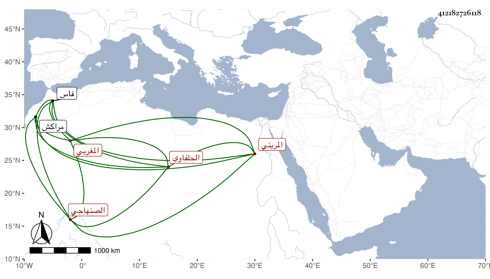

0902Sakhawi.DawLamic.ITO20230111-ara1.EIS1600.412182726118
Biography ID: 412182726118
1122
يعقوب بن محمد أبو يوسف الصنهاجي المغربي الحلفاوي لسكناه مدرسة السلطان أبي يوسف بن عبد الحق المريني بالحلفاويين . الأستاذ المقرئ الثائر بفاس . أخذ القراآت السبع رواية ودراية عن أبي عبد الله محمد القيسي الكفيف وأبي الحجاج يوسف بن منحوت الآخذ لها بمراكش عن أبي عبد الله محمد بن أحمد الصفار ، وارتحل حتى برع في الأصلين والعربية والقراآت واشتهر بالعلم والصلاح وولي مشيخة المدرسة المذكورة . ولم يزل على أجمل طريقة حتى كانت الفتنة بين السعيد محمد بن عبد العزيز وأبي سعيد عثمان بن أحمد في سنة بضع وعشرين وثمانمائة وكان ما كان مما أورده المقريزي في عقوده مطولا .
